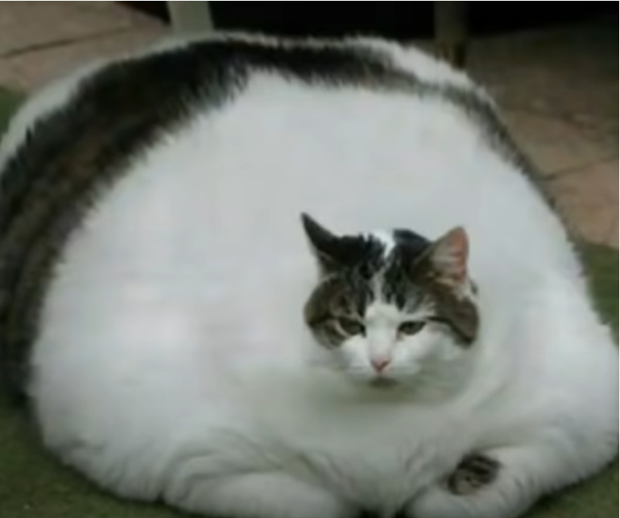

БОГАТЫРЬ
Как дорастить кота до 165 лет

Дело было в кофе. Почки — одно из самых слабых мест в организме кошки, и если постоянно даешь им немного диуретика, которым является кофеин, он может предотвратить одну из основных причин смерти, мочекаменную болезнь.
Пониженный уровень тестостерона также связывают с большей продолжительностью жизни у некоторых видов птиц и даже у людей (ряд учёных полагают, что именно тестостерон является причиной того, что мужчины умирают раньше женщин).
- ГЛАВНОЕ
- КУРИТЬ
- ТРАВКУ
- КАЖДЫЙ ДЕНЬ